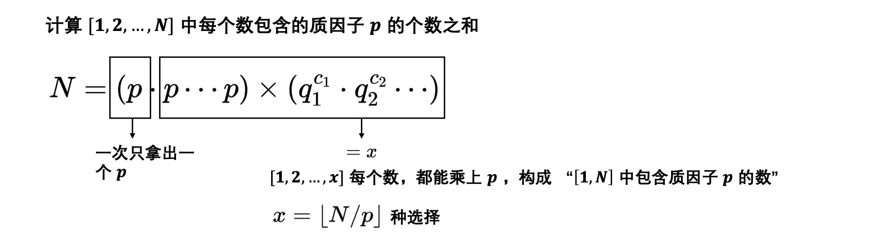

对顶数据结构 始终在序列中间的某个指定位置进行操作 对顶数据结构
HDU4699
具体数学：递归模型 Hanoi塔 三根柱子的 Hanoi 塔模型的递归解为
T n = 2 T n − 1 + 1 T_n = 2T_{n-1} + 1 T n = 2 T n − 1 + 1
直线分割模型 平面上的n n n L n L_n L n
直线分割模型拓展（一）—— 任意直线线段组合图形，比如Z Z Z
Z n = Z n − 1 + p ⋅ ( n − 1 ) + 1 Z_n = Z_{n-1} + p\cdot (n-1) + 1 Z n = Z n − 1 + p ⋅ ( n − 1 ) + 1
其中 ，p p p 做多能够产生的交点数
如果是V V V p = 4 p = 4 p = 4 V V V 4 4 4
直线分割模型拓展 (二) —— 三维区域k k k
P n P_n P n n n n P n = P n − 1 + L n − 1 P_n = P_{n-1} + L_{n-1} P n = P n − 1 + L n − 1
其中L n L_{n} L n n n n 约瑟夫问题 { J ( 1 ) = 1 J ( 2 n ) = 2 J ( n ) − 1 n ⩾ 1 J ( 2 n + 1 ) = 2 J ( n ) + 1 n ⩾ 1 \begin{cases} J(1) = 1 \\ J(2n) = 2J(n) - 1 && n \geqslant 1 \\ J(2n+1) = 2J(n) + 1 && n \geqslant 1 \end{cases} ⎩ ⎪ ⎪ ⎨ ⎪ ⎪ ⎧ J ( 1 ) = 1 J ( 2 n ) = 2 J ( n ) − 1 J ( 2 n + 1 ) = 2 J ( n ) + 1 n ⩾ 1 n ⩾ 1
递归式的封闭形式n = 2 m + l n = 2^m + l n = 2 m + l
J ( 2 m + l ) = 2 l + 1 , m ⩾ 0 , 0 ⩽ l < 2 m J(2^m+l) = 2l+1, \quad m \geqslant 0, \ 0 \leqslant l < 2^m J ( 2 m + l ) = 2 l + 1 , m ⩾ 0 , 0 ⩽ l < 2 m
注意到如果2 m ⩽ n < 2 m + 1 2^m \leqslant n < 2^{m+1} 2 m ⩽ n < 2 m + 1 l = n m o d 2 m l = n \bmod 2^m l = n m o d 2 m 0 ⩽ l < 2 m 0 \leqslant l < 2^m 0 ⩽ l < 2 m 循环移位n n n n = ( b m b m − 1 ⋯ b 1 b 0 ) 2 , l = n m o d 2 m n = (b_mb_{m-1}\cdots b_1b_0)_2, \ l = n \bmod 2^m n = ( b m b m − 1 ⋯ b 1 b 0 ) 2 , l = n m o d 2 m
l = ( b m − 1 b m − 2 ⋯ b 1 b 0 ) 2 2 l = ( b m − 1 b m − 2 ⋯ b 1 b 0 0 ) 2 2 l + 1 = ( b m − 1 b m − 2 ⋯ b 1 b 0 1 ) 2 , b m = 1 J ( n ) = 2 l + 1 = ( b m − 1 b m − 2 ⋯ b 1 b 0 b m ) 2 \begin{gathered} l = (b_{m-1}b_{m-2}\cdots b_1b_0)_2 \\ 2l = (b_{m-1}b_{m-2}\cdots b_1b_00)_2 \\ 2l + 1 = (b_{m-1}b_{m-2}\cdots b_1b_01)_2 , \quad b_m = 1 \\ J(n) = 2l+1 = (b_{m-1}b_{m-2}\cdots b_1b_0b_m)_2 \end{gathered} l = ( b m − 1 b m − 2 ⋯ b 1 b 0 ) 2 2 l = ( b m − 1 b m − 2 ⋯ b 1 b 0 0 ) 2 2 l + 1 = ( b m − 1 b m − 2 ⋯ b 1 b 0 1 ) 2 , b m = 1 J ( n ) = 2 l + 1 = ( b m − 1 b m − 2 ⋯ b 1 b 0 b m ) 2
J ( n ) J(n) J ( n ) n n n n n n 环形循环左移 1 1 1 0 0 0 如此执行若干次
( J ( J ⋯ J ( n ) ⋯ ) ) = 2 V ( n ) − 1 V ( n ) 表示 n 中有几个为 1 的位 \begin{gathered} (J(J\cdots J(n) \cdots )) = 2^{V(n)} - 1 \\ V(n) \text{表示} n \text{中有几个为} 1 \text{的位} \end{gathered} ( J ( J ⋯ J ( n ) ⋯ ) ) = 2 V ( n ) − 1 V ( n ) 表示 n 中有几个为 1 的位
特别地，如果有J ( n ) = n / 2 J(n) = n/2 J ( n ) = n / 2 n n n 1 1 1 1 1 1 1 2 n/2 = n >> 1 J(n) = n 循环左移 1 位
成套方法 成套方法简介 递归式
f ( 1 ) = α f ( 2 n ) = 2 f ( n ) + β n ⩾ 1 f ( 2 n + 1 ) = 2 f ( n ) + γ n ⩾ 1 \begin{gathered} f(1) = \alpha \\ f(2n) = 2f(n) + \beta && n \geqslant 1 \\ f(2n+1) = 2f(n) + \gamma && n \geqslant 1 \end{gathered} f ( 1 ) = α f ( 2 n ) = 2 f ( n ) + β f ( 2 n + 1 ) = 2 f ( n ) + γ n ⩾ 1 n ⩾ 1
根据枚举猜想，最后可以表示成形式
f ( n ) = A ( n ) α + B ( n ) β + C ( n ) γ f(n) = A(n)\alpha + B(n)\beta +C(n) \gamma f ( n ) = A ( n ) α + B ( n ) β + C ( n ) γ
如果令n = 2 m + l n = 2^m + l n = 2 m + l 0 ⩽ l < 2 m ( n ⩾ 1 ) 0 \leqslant l < 2^m \ (n \geqslant 1) 0 ⩽ l < 2 m ( n ⩾ 1 )
A ( n ) = 2 m B ( n ) = 2 m − 1 − l C ( n ) = l \begin{gathered} A(n) = 2^m \\ B(n) = 2^m - 1 - l \\ C(n) = l \end{gathered} A ( n ) = 2 m B ( n ) = 2 m − 1 − l C ( n ) = l
检验任意特殊值 α = 1 , β = γ = 0 , ⟹ f ( n ) = A ( n ) \alpha = 1, \beta = \gamma = 0, \Longrightarrow f(n) = A(n) α = 1 , β = γ = 0 , ⟹ f ( n ) = A ( n )
A ( 1 ) = 1 A ( 2 n ) = 2 A ( n ) n ⩾ 1 A ( 2 n + 1 ) = 2 A ( n ) n ⩾ 1 \begin{gathered} A(1) = 1 \\ A(2n) = 2A(n) && n \geqslant 1 \\ A(2n+1) = 2A(n) && n \geqslant 1 \\ \end{gathered} A ( 1 ) = 1 A ( 2 n ) = 2 A ( n ) A ( 2 n + 1 ) = 2 A ( n ) n ⩾ 1 n ⩾ 1
而上面猜想说A ( n ) = 2 m A(n) = 2^m A ( n ) = 2 m A ( 2 m + 1 + 2 l ) ⟹ 对m归纳 , 0 ⩽ 2 l < 2 m + 1 A\left(2^{m+1}+2 l\right) \Longrightarrow \text{对m归纳}, 0 \leqslant 2l < 2^{m+1} A ( 2 m + 1 + 2 l ) ⟹ 对 m 归纳 , 0 ⩽ 2 l < 2 m + 1 A ( 2 m + 1 + 2 l ) = 2 m + 1 A\left(2^{m+1}+2 l\right) = 2^{m+1} A ( 2 m + 1 + 2 l ) = 2 m + 1 A ( 2 m + 1 + 2 l ) = 2 A ( 2 m + l ) = 2 ⋅ 2 m = 2 m + 1 A\left(2^{m+1}+2 l\right) = 2A(2^m + l) = 2\cdot 2^m = 2^{m+1} A ( 2 m + 1 + 2 l ) = 2 A ( 2 m + l ) = 2 ⋅ 2 m = 2 m + 1
成套方法步骤 成套方法一般取特殊的函数值来求解
取f ( n ) = 1 f(n) = 1 f ( n ) = 1
1 = α 1 = 2 + β ⇒ β = − 1 1 = 2 + γ ⇒ γ = − 1 \begin{gathered} 1 = \alpha \\ 1 = 2 + \beta && \Rightarrow \beta = -1 \\ 1 = 2 + \gamma && \Rightarrow \gamma = -1 \end{gathered} 1 = α 1 = 2 + β 1 = 2 + γ ⇒ β = − 1 ⇒ γ = − 1
由此，可以推出A ( n ) − B ( n ) − C ( n ) = f ( n ) = 1 A(n)-B(n)-C(n) = f(n)=1 A ( n ) − B ( n ) − C ( n ) = f ( n ) = 1
取f ( n ) = n f(n) = n f ( n ) = n
1 = α 2 n = 2 n + β ⇒ β = 0 2 n + 1 = 2 n + γ ⇒ γ = 1 \begin{gathered} 1 = \alpha \\ 2n = 2n + \beta && \Rightarrow \beta = 0 \\ 2n+1 = 2n + \gamma && \Rightarrow \gamma = 1 \end{gathered} 1 = α 2 n = 2 n + β 2 n + 1 = 2 n + γ ⇒ β = 0 ⇒ γ = 1
由此，可以推出A ( n ) + C ( n ) = n A(n)+C(n) = n A ( n ) + C ( n ) = n
综上所述
A ( n ) = 2 m n = 2 m + l a n d 0 ⩽ l < 2 m A ( n ) − B ( n ) − C ( n ) = 1 A ( n ) + C ( n ) = n \begin{gathered} A(n) = 2^m && n = 2^m+l \ \bold{and} \ 0 \leqslant l < 2^m \\ A(n)-B(n)-C(n) = 1 \\ A(n) + C(n) = n \end{gathered} A ( n ) = 2 m A ( n ) − B ( n ) − C ( n ) = 1 A ( n ) + C ( n ) = n n = 2 m + l a n d 0 ⩽ l < 2 m
递归式与基变换 对递归式问题进行推广，对于递归式
f ( j ) = a j 1 ⩽ j < d f ( d n + j ) = c f ( n ) + β j 0 ⩽ j < d , n ⩾ 1 \begin{gathered} f(j) = a_j && 1 \leqslant j < d \\ f(dn+j) = cf(n) + \beta_j && 0 \leqslant j < d, \ n \geqslant 1 \end{gathered} f ( j ) = a j f ( d n + j ) = c f ( n ) + β j 1 ⩽ j < d 0 ⩽ j < d , n ⩾ 1
根据基数与进制分解的原理 ，变动基数的解可以表示如下
f ( ( b m b m − 1 ⋯ b 1 b 0 ) d ) = ( α b m β b m − 1 β b m − 2 ⋯ β b 1 β b 0 ) c f\left( (b_mb_{m-1}\cdots b_1b_0)_d \right) = (\alpha_{b_m} \beta_{b_{m-1}} \beta_{b_{m-2}} \cdots \beta_{b_1}\beta_{b_0})_c f ( ( b m b m − 1 ⋯ b 1 b 0 ) d ) = ( α b m β b m − 1 β b m − 2 ⋯ β b 1 β b 0 ) c
例如给定递归式
f ( 1 ) = 34 f ( 2 ) = 5 f ( 3 n ) = 10 f ( n ) + 76 n ⩾ 1 f ( 3 n + 1 ) = 10 f ( n ) − 2 n ⩾ 1 f ( 3 n + 2 ) = 10 f ( n ) + 8 n ⩾ 1 \begin{gathered} f(1) = 34 \\ f(2) = 5 \\ f(3n) = 10f(n) + 76 && n \geqslant 1 \\ f(3n+1) = 10f(n)-2 && n \geqslant 1 \\ f(3n+2) = 10f(n)+8 && n \geqslant 1 \end{gathered} f ( 1 ) = 3 4 f ( 2 ) = 5 f ( 3 n ) = 1 0 f ( n ) + 7 6 f ( 3 n + 1 ) = 1 0 f ( n ) − 2 f ( 3 n + 2 ) = 1 0 f ( n ) + 8 n ⩾ 1 n ⩾ 1 n ⩾ 1
计算f ( 19 ) f(19) f ( 1 9 ) 19 = ( 201 ) 3 19 = (201)_3 1 9 = ( 2 0 1 ) 3
f ( 19 ) = f ( ( 201 ) 3 ) = ( α 2 β 0 β 1 ) 10 = ( 5 76 − 2 ) 10 = 1258 \begin{gathered} f(19) = f((201)_3) = (\alpha_2 \ \beta_0 \ \beta_1)_{10} \\ = (5 \ 76 \ -2)_{10} = 1258 \end{gathered} f ( 1 9 ) = f ( ( 2 0 1 ) 3 ) = ( α 2 β 0 β 1 ) 1 0 = ( 5 7 6 − 2 ) 1 0 = 1 2 5 8
约瑟夫问题扩展 任意位置 UVALive3882
约瑟夫问题推广
Josephus问题的一些结论 约瑟夫发现自己处在给定位置 j j j q q q q − 1 q-1 q − 1
先来看 Josephus 方程的递推形式
f ( 1 ) = 0 f ( n ) = ( f ( n − 1 ) + q ) m o d n \begin{gathered} f(1) = 0 \\ f(n) = (f(n-1) + q) \bmod n \end{gathered} f ( 1 ) = 0 f ( n ) = ( f ( n − 1 ) + q ) m o d n
其中，f ( n ) f(n) f ( n ) n n n 0 0 0 0 0 0 f ( n ) f(n) f ( n )
特殊计数序列——Catalan数 定理 考虑由n n n + 1 +1 + 1 n n n − 1 -1 − 1 2 n 2n 2 n
a 1 , a 2 , ⋯ , a 2 n a_1, a_2, \cdots , a_{2n} a 1 , a 2 , ⋯ , a 2 n
其部分和总是满足
a 1 + a 2 + ⋯ + a k ⩾ 0 ( ∀ k = { 1 , 2 , ⋯ , 2 n } ) a_1+a_2+\cdots + a_k \geqslant 0 \quad (\forall k = \{1, 2, \cdots, 2n \}) a 1 + a 2 + ⋯ + a k ⩾ 0 ( ∀ k = { 1 , 2 , ⋯ , 2 n } )
这种序列的个数等于第n n n
C n = 1 n + 1 ( 2 n n ) ( n ⩾ 0 ) C_n = \frac{1}{n+1} {2n \choose n} (n \geqslant 0) C n = n + 1 1 ( n 2 n ) ( n ⩾ 0 )
证明如下
通过以上证明了任意不可接受序列U ( n , n ) U(n, n) U ( n , n ) C ( n + 1 , n − 1 ) C(n+1, n-1) C ( n + 1 , n − 1 ) C ( n + 1 , n − 1 ) C(n+1, n-1) C ( n + 1 , n − 1 )
( 2 n ) ! ( n + 1 ) ! ( n − 1 ) ! \frac{(2n)!}{(n+1)!(n-1)!} ( n + 1 ) ! ( n − 1 ) ! ( 2 n ) !
从而
U ( n ) = ( 2 n ) ! ( n + 1 ) ! ( n − 1 ) ! U(n) = \frac{(2n)!}{(n+1)!(n-1)!} U ( n ) = ( n + 1 ) ! ( n − 1 ) ! ( 2 n ) !
A ( n ) = ( 2 n n ) − U ( n ) = 1 n + 1 ( 2 n n ) A(n) = {2n \choose n} - U(n) = \frac{1}{n+1}{2n \choose n} A ( n ) = ( n 2 n ) − U ( n ) = n + 1 1 ( n 2 n )
计数类问题编程实现常用函数 阶乘分解 N ! N! N !
∑ p k ⩽ N ⌊ N p k ⌋ \sum_{p^k \leqslant N} \lfloor \frac{N}{p_k} \rfloor p k ⩽ N ∑ ⌊ p k N ⌋
试除法分解质因数 1 2 3 4 5 6 7 8 9 10 11 12 void divide(int x) { for (int i = 2; i <= x/i; i++) { if (x % i == 0) { int s = 0; while (x % i == 0) s++, x /= i; // i^s make_pair(i, s); } } if (x > 1) make_pair(x, 1); // x^1 }
朴素筛法求质数 1 2 3 4 5 6 7 8 9 10 11 vector<int> primes; bool st[maxn]; // init st[...] = 0 // st = true 表示这个数是合数 void get_primes(int n) { for (int i = 2; i <= n; i++) { if (st[i]) continue ; primes.push_back(i); for (int j = 2*i; j <= n; j += i) st[j] = true ; } }
线性筛法求质数
1 2 3 4 5 6 7 8 9 10 11 12 vector<int> primes; bool st[maxn]; void get_primes for (int i = 2; i <= n; i++) { if (!st[i]) primes.push_back(i); for (int j = 0; primes[j] <= n/i; j++) { st[primes[j] * i] = true ; if (i % primes[j]) break ; } } }
Catalan 数经典应用 这里涉及到一个编程技巧，叫高精度压位 Acwing130
其实就是计算 Catalan 数
1 n + 1 ( 2 n n ) \frac{1}{n+1} {2n \choose n} n + 1 1 ( n 2 n )
algorithm
打表[ 2 , 2 n ] [2, 2n] [ 2 , 2 n ] 阶乘分解，f o r ∀ p ∈ p r i m e s [ ⋯ ] \bold{for} \ \forall p \in \bold{primes}[\cdots] f o r ∀ p ∈ p r i m e s [ ⋯ ] p w [ p ] = g e t ( 2 n , p ) − 2 ⋅ g e t ( n , p ) \bold{pw}[p]= \bold{get}(2n, p) - 2\cdot \bold{get}(n, p) p w [ p ] = g e t ( 2 n , p ) − 2 ⋅ g e t ( n , p ) p p p ( 2 n n ) 2n \choose n ( n 2 n ) 对n + 1 n+1 n + 1 n + 1 = ⋯ p s ⋯ n+1 = \cdots p^s \cdots n + 1 = ⋯ p s ⋯ p w [ p ] − = s \bold{pw}[p] -= s p w [ p ] − = s f o r ∀ p ∈ p r i m e s [ ⋯ ] : \bold{for} \ \forall p \in \bold{primes}[\cdots]: f o r ∀ p ∈ p r i m e s [ ⋯ ] : p w [ p ] \bold{pw}[p] p w [ p ] m u t i ( a n s , p ) \bold{muti}(ans, p) m u t i ( a n s , p ) 1 2 3 4 5 6 7 8 9 10 11 12 13 14 15 16 17 18 19 20 21 22 23 24 25 26 27 28 29 30 31 32 33 34 35 36 37 38 39 40 41 42 43 44 45 46 47 48 49 50 51 52 53 54 55 56 57 58 59 60 61 62 63 64 65 66 67 68 69 70 71 72 const int maxn = 120000 + 10; int n; vector<int> primes; bool st[maxn]; void get_primes memset(st, 0, sizeof st); for (int i = 2; i <= 2*n; i++) { if (st[i]) continue ; primes.push_back(i); for (int j = 2*i; j <= 2*n; j += i) st[j] = true ; } } int pw[maxn]; inline int get(int n, int p) { int s = 0; while (n) s += n/p, n /= p; return s; } void multi(vector<ll>& res, int b) { ll t = 0; for (int i = 0; i < res.size(); i++) { t += res[i] * b; res[i] = t % 100000000, t /= 100000000; } while (t) res.push_back(t % 100000000), t /= 100000000; } void out(const vector<ll>& res) { printf ("%lld" , res.back()); for (int i = res.size()-2; i >= 0; i--) { printf ("%08lld" , res[i]); } printf ("\n" ); } void init // } int main freopen("input.txt" , "r" , stdin); cin >> n; // get primes get_primes(); // divide factorial for (auto p : primes) pw[p] = get(2*n, p) - 2 * get(n, p); // divide int x = n+1; for (auto p : primes) if (p <= x) { int s = 0; while (x % p == 0) s++, x /= p; pw[p] -= s; } // multi vector<ll> ans; ans.push_back(1); for (auto p : primes) { for (int j = 0; j < pw[p]; j++) multi(ans, p); } // output out(ans); }


 微信
微信 支付宝
支付宝